철도신호기사 (2013-03-10 기출문제)
1과목: 전자공학
1. 연산증폭기에 계단파 신호를 입력할 때 출력전압에 대해서 정의한 솔루율(slow rate)의 단위는?
- [V/μs]
- [mV/s]
- [μs/V]
- [kΩ/V]
(정답률: 70%)

2. 다음 중 정현파 발진기에 속하지 않는 것은?
- 수경발전기
- 블로킹발전기
- LC발전기
- CR발전기
(정답률: 80%)
3. 전압 증폭회로에서 대역폭을 4배로 하려면 증폭 이득율 약 몇 [dB] 감소시켜야 하는가?
- 0.25[dB]
- 4[dB]
- 6[dB]
- 12[dB]
(정답률: 61%)
4. 전압직렬(Voltage Series) 궤환증폭기의 일반적인 특성이 아닌 것은?
- 주파수 대역폭이 증가한다.
- 비직선 일그러짐이 감소한다.
- 입력저항이 감소한다.
- 출력저항이 감소한다.
(정답률: 74%)
5. 논리식
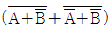
을 간단히 하면?- A
- B
- AB
- A+B
(정답률: 92%)
6. 16kHz의 Clock이 있다. 4kHz의 Clock이 필요할 때 사용되는 JK Filp Flop 의 최소 개수는?
- 1
- 2
- 3
- 4
(정답률: 78%)
7. 다음 중 디엠퍼시스(de-emphasis) 회로에 대한 설명으로 틀린 것은?
- FM 수신기에 이용된다.
- 일정의 적분회로이다.
- 높은 주파수의 출력을 감소시킨다.
- 반송파를 억제하고 양측파대를 통과시킨다.
(정답률: 82%)
8. 수정면이 등가회로에서 L=25mH, C=1.6pF, R=5Ω일 때 수정편이 Q는 얼마인가?
- 5000
- 10000
- 125000
- 25000
(정답률: 84%)
9. 비동기식 모드(mode) 13 계수기를 만들려면 최소한 몇 개의 플립플롭이 필요한가?
- 13
- 7
- 4
- 2
(정답률: 87%)
10. 다음 회로에서 제너 다이오드에 흐르는 전류는? (단, 제너 다이오드의 파괴 전압은 10[V]이다.)
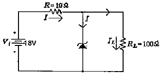
- 0.2[A]
- 0.7[A]
- 1.0[A]
- 1.7[A]
(정답률: 76%)
11. 반송파 전력이 15[kW]일 때 변조도를 100[%]로 변조하면 피변조파 전력은 얼마인가?
- 12.5[kW]
- 15[kW]
- 20[kW]
- 22.5[kW]
(정답률: 81%)
12. 주파수 대역폭을 넓히기 위한 방법으로 거리가 먼 것은?
- 동조회로의 선택도를 높인다.
- 북동조회로를 사용한다.
- 궤환보정을 한다.
- 스태거 증폭방식을 사용한다.
(정답률: 74%)
13. 궤환증폭 회로에서 부궤환이 되는 조건은?
- 1+Aβ＞1
- 1+Aβ＜1
- 1+Aβ=1
- Aβ＜1
(정답률: 60%)
14. 진폭변조 (AM)에서 신호전압을 es=Essinωst, 반송파 전압을 eo=Ecsinωct라 할 때 피번조파 전압 e(t)를 표시하는 식으로 옳은 것은?
- e(t)=(Ec+Es)sinωst
- e(t)=(Ec+Es)sinωct
- e(t)=(Ec+Es sinωst)sinωct
- e(t)=(Ec+Es sinωst)sinωst
(정답률: 91%)
15. 다음 논리회로의 출력은?
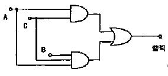
- AB
- AC
- ABC
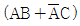
(정답률: 88%)
16. A, B, C 양의 논리입력에서 A＜B이고, B＞C일 경우에만 출력 Y가 "1"이 되는 논리식은?
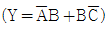
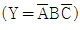
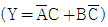
- Y=AC
(정답률: 80%)
17. 직류 출력 전압이 300V(무부하시), 전부하시 출력 전압이 250V 였다면 전압 변동률은?
- 10[%]
- 20[%]
- 30[%]
- 40[%]
(정답률: 91%)
18. 진폭 변조에서 반송파의 주파수가 500[kHz]이고 신호파의 주파수가 1[kHz]인 경우에 변조파가 차지하는 주파수 점유 대역폭은 얼마인가?
- 1[kHz]
- 2[kHz]
- 500[kHz]
- 502[kHz]
(정답률: 66%)
19. 다음 중 펄스폭이 10[μs]이고 펄스 반복주파수가 1[kHz]일 때 전력이 20[W]인 경우 이 펄스의 첨주전력은?
- 1[kW]
- 2[kW]
- 3[kW]
- 4[kW]
(정답률: 80%)
20. 다음 논리회로의 기능에 해당하는 것은?
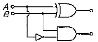
- 플립플롭
- 반가산기
- 반감산기
- 계수기
(정답률: 78%)
2과목: 회로이론 및 제어공학
21. RL 직렬회로에 직류전압 5[V]를 t=0에서 인가하였더니
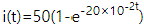
[mA](t≥0)이었다. 이 회로의 저항을 처음 값의 2배로 하면 시정수는 얼마가 되겠는가?- 10[msec]
- 40[msec]
- 5[sec]
- 25[sec]
(정답률: 43%)
22. 저항 R과 리액턴스 X를 병렬로 연결할 때의 억률은?
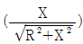
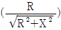
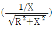
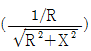
(정답률: 50%)
23. 회로망 출력단자 a-b에서 바라본 등기 임피던스는? (단, V1=6[V], V2=3[V], I1=10[A], R1=15[Ω], R2=10[Ω], L=2[H], jw=s 이다.)
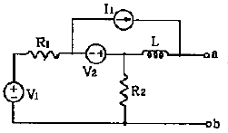
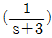
- s+15
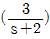
- 2s+6
(정답률: 60%)
24. 각 상의 임피던스가 R+jX[Ω]인 것을 Y 결선으로 한 평형 3상 부하에 선각전압 E[V]을 가하면 선전류는 몇 [A]가 되는가?
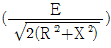
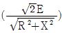
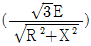
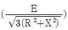
(정답률: 60%)
25. 그림의 전기회로에서 전달함수 E2(s)/E1(s)는?
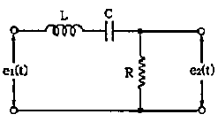
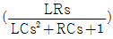
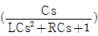
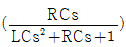
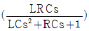
(정답률: 59%)
26. 다음 파형의 라플라스 변환은?
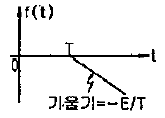
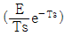
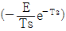
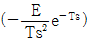
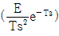
(정답률: 53%)
27. 그림과 같은 회로에서 a-b 사이의 전위차[V]는?
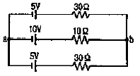
- 10[V]
- 8[V]
- 6[V]
- 4[V]
(정답률: 61%)
28. 파형이 톱니파 일 경우 파형률은?
- 1.155
- 1.732
- 1.414
- 0.577
(정답률: 41%)
29. 다음에서 fc(t)는 우함수, fo(t)는 기함수로 나타낸다. 주기함수 f(t)=fc(t)+fo(t)에 대한 다음의 서술 중 바르지 못한 것은?
- fc(t)=fc(-t)
- fo(t)=1/2[f(t)-f(-t)]
- fc(t)=-fo(-t)
- fc(t)=1/2[f(t)-f(-t)]
(정답률: 48%)
30. 다음과 같은 π형 회로에서 4단자 정수 B는?
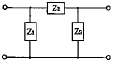
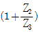
- Z2
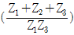
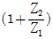
(정답률: 41%)
31. 자동제어의 분류에서 제어량의 종류에 의한 분류가 아닌 것은?
- 서보 기구
- 추지 제어
- 프로세스 제어
- 자동조정
(정답률: 43%)
32. 그림과 같은 회로망은 어떤 보상기로 사용될 수 있는가? (단, 1＜R1C 인 경우로 한다.)
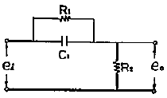
- 지연 보상기
- 지진상 보상기
- 지상 보상기
- 진상 보상기
(정답률: 48%)
33. 미분방정식이
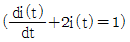
일 때 i(t)는? (단, t=0에서 i(0)=0이다.)(오류 신고가 접수된 문제입니다. 반드시 정답과 해설을 확인하시기 바랍니다.)- 1/2(1+e-t)
- 1/2(1-e-t)
- 1/2(1+et)
- 1/2(1et)
(정답률: 53%)
34. 다음 블록선도에서 C/R는?
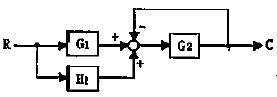
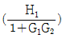
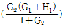
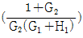
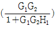
(정답률: 55%)
35. 2차계의 주파수 응답과 시간 응답간의 관계 중 잘못된 것은?
- 안정된 제어계에서 높은 대역폭은 큰 공진 첨두값과 대응된다.
- 최대 오버슈트와 공진 첨두값은 ζ(감쇠율)안의 함수로 나타낼 수 있다.
- wn(고유주파수) 일정시 ζ(감쇠율)가 증가하면 상승 시간과 대역폭은 증가한다.
- 대역폭은 영 주파수 이득보다 3[dB] 떨어지는 주파수로 정의된다.
(정답률: 44%)
36. 전달함수
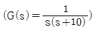
에 w=0.1 인 정현파 입력을 주었을 때 보드선도의 이득은?- -40[dB]
- -20[dB]
- 0[dB]
- 20[dB]
(정답률: 50%)
37. s3+11s2+2s+40=0 에는 양의 실수부를 갖는 근은 몇 개 있는가?
- 0
- 1
- 2
- 3
(정답률: 53%)
38. 제어량을 어떤 일정한 목표값으로 유지하는 것을 목적으로 하는 제어법은?
- 추종제어
- 비율제어
- 프로그램제어
- 정치제어
(정답률: 57%)
39. 계의 특성상 감쇠계수가 크면 위상여유가 크고, 감쇠성이 강하여 ( A )는(은) 좋으나 ( B )는(은) 나쁘다. A, B를 바르게 묶은 것은?
- 안정도, 응답성
- 응답성, 이득여유
- 오프셋, 안정도
- 이득여유, 안정도
(정답률: 61%)
40. Z 변환법을 사용한 샘플치 제어계가 안정되려면 1+GH(Z)=0의 근의 위치는?
- Z평면의 좌반변에 존재하여야 한다.
- Z평면의 우반변에 존재하여야 한다.
- ㅣZ l=1인 단위 원내에 존재하여야 한다.
- ㅣZ l=1인 단위 원밖에 존재하여야 한다.
(정답률: 66%)
3과목: 신호기기
41. 건널목 정시간제어기에서 열차속도 130[km/h], 제어거리 1200[m]일 때 경보시점부터 건널목에 열차도달시간은 약 얼마인가?
- 약 27초
- 약 33초
- 약 38초
- 약 40초
(정답률: 96%)
42. 건널목 경보기에서 경보등의 등당 점멸 횟수는?
- 20±5[회/min]
- 30±5[회/min]
- 40±10[회/min]
- 50±10[회/min]
(정답률: 96%)
43. 전기 선로전환기에 사용되는 전동기에 관한 내용으로 옳지 않은 것은?
- 정속도 동기전동기를 사용한다.
- 단상 4극을 사용한다.
- 베어링은 급유할 필요가 없다.
- 기동력이 크다.
(정답률: 87%)
44. 54. 계전기실, 열차집중제어장치 기계실, 신호원격제어장치 및 건널목의 AC 전원의 접지저항은 몇 [Ω]이하로 하여야 하는가?
- 10[Ω]
- 15[Ω]
- 20[Ω]
- 25[Ω]
(정답률: 84%)
45. 권선형 3상 유도전동기의 기동시 2차측 회로에 저항을 넣는 이유로 가장 옳은 것은?
- 회전수 감소
- 기동 전류 감소와 토크 증대
- 기동 토크 감소
- 기동 전류 증가
(정답률: 88%)
46. 건널목 경보 장치에 건널목 제어기를 사용하는 목적이나 이유가 아닌 것은?
- 건널목이 중첩된 곳에 사용
- 신호 케이블의 소요가 적으므로
- 건널목 제어장이 서로 다를 때
- 전철 구간 등 별도 궤도회로 구성이 곤란한 곳에 사용
(정답률: 88%)
47. 건널목 제어자 401형의 출력조정용 가변인덕턴스의 탭(Tap)은 몇 단계로 되어 있는가?
- 20
- 15
- 10
- 5
(정답률: 92%)
48. 3상 유도 전동기의 1차 입력 60[kW], 1차 손실 1[kW], 슬립 3[%]일 때 기계적 출력은?
- 약 57[kW]
- 약 59[kW]
- 약 61[kW]
- 약 63[kW]
(정답률: 71%)
49. 중성점이 있는 동일 변압기 2대를 사용하여 T결선으로 3상 변압을 하려고 할 때 변압기의 이용률은?
- 62.5[%]
- 67.5[%]
- 76.6[%]
- 86.6[%]
(정답률: 87%)
50. 1차측 권수가 1500인 변압기의 2차측에 접속한 16[Ω]의 저항은 1차측에 환산했을 때 8[kΩ]으로 되었다고 한다. 2차측 권수는?
- 약 75회
- 약 70회
- 약 67회
- 64회
(정답률: 61%)
51. 60[Hz]인 3상 8극 및 2극의 유도전동기를 차동종속으로 정속하여 운전할 때의 무부하 속도는?
- 3600[rpm]
- 1200[rpm]
- 900[rpm]
- 720[rpm]
(정답률: 82%)
52. 전기 선로전환기에 사용하는 전동기의 슬립전류는 동작전류의 몇 배 이하가 되지 않도록 하여야 하는가?
- 0.9배
- 1.1배
- 1.2배
- 1.3배
(정답률: 75%)
53. 직류기의 반환 부하법에 의한 온도시험이 아닌 것은?
- 키크법
- 카프법
- 홉킨스법
- 클론델법
(정답률: 66%)
54. 직류전동기에서 보극을 사용하는 가장 적합한 이유는?
- 역회전방지
- 정류개선
- 섬락방지
- 불꽃방지
(정답률: 78%)
55. 전력용 변압기에서 콘서베이터를 설치하는 목적은?
- 열화방지
- 통풍장치
- 코로나방지
- 강제순환
(정답률: 81%)
56. 무부하 유도 전동기는 역률이 낮지만 부하가 늘면 역률이 커지는 이유는?
- 전압 감소
- 효율 증가
- 전류 증가
- 2차 저항 증가
(정답률: 50%)
57. 수은정류기의 전압과 효율과의 관계로 옳은 것은?
- 전압이 상승함에 따라 효율은 저하된다.
- 전압과 효율은 전혀 무관하다.
- 어느 전압이하에서는 전압에 관계없이 일정하다.
- 전압이 상승함에 따라 효율도 상승된다.
(정답률: 67%)
58. 건널목 전동차단기의 동작 제어전압 범위로 옳은 것은?
- 정격값의 0.8 ~ 1.1배로 한다.
- 정격값의 0.9 ~ 1.2배로 한다.
- 정격값의 1.0 ~ 1.3배로 한다.
- 정격값의 0.1 ~ 1.4배로 한다.
(정답률: 96%)
59. 100[V], 10[A], 전기자저항 1[Ω], 회전수 1800[rpm]인 전동기의 영기전력은?
- 120[V]
- 110[V]
- 100[V]
- 90[V]
(정답률: 67%)
60. 여자전류가 흐르고서부터 N접점이 닫힐(접촉할) 때까지 다소간 시소를 갖는 계전기는?
- 완동계전기
- 선조계전기
- 자기유지계전기
- 완방계전기
(정답률: 92%)
4과목: 신호공학
61. 입환표지 또는 신호기가 진행신호를 현시한 후 정지 신호로 바꿀 때 일정시간동안 열차점유 유·무와 관계없이 선로 전환기를 전환할 수 없도록 하는 쇄정법은?
- 보류쇄정
- 철사쇄정
- 진로쇄정
- 시간쇄정
(정답률: 68%)
62. 궤도회로 양측레일에 귀선전류가 각각 150A, 200A가 흐르고 있다면 불평형율(%)은?
- 약 15.3%
- 약 14.3%
- 약 13.2%
- 약 16.2%
(정답률: 87%)
63. 단선구간의 선로용량 산출 공식은? (단, N : 역사이의 선로용량(편도 1일 열차횟수), T : 역사이의 평균열차운행시간(분), C : 운전취급시분(분), f : 선로이용률(통상0.6))
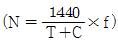
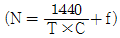
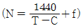
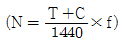
(정답률: 91%)
64. 보수자 선로 횡단 장치에서 300[km/h]로 운행중인 고속철도 구간 선로를 횡단하는 보수자가 20초 이내에 횡단하기 위하여 열차검지구간을 약 얼마정도 확보해야 하는가?
- 약 500m
- 약 950m
- 약 1,700m
- 약 3,400m
(정답률: 86%)
65. 일정 구간의 열차운행 최고 속도가 180km/h, 경보시간을 30초라 가정하면 이 구간 건널목의 경보제어거리는 몇 m인가?
- 1,100m
- 1,500m
- 3,600m
- 5,400m
(정답률: 86%)
66. 레일에 송전하는 신호전류를 소정 횟수의 부호로 단속하여 궤도회로를 구성하는 방식은?
- AF궤도회로
- 분주궤도회로
- 코드궤도회로
- 정류궤도회로
(정답률: 92%)
67. 경부고속철도에서 사용하는 ATC 장치에서 궤도회로에 흐르는 연속정보에 대한 설명으로 틀린 것은?
- 실행속도
- 폐색구배정보
- 예고속도
- 절대정지구간 제어정보
(정답률: 83%)
68. 경부고속철도 LCP 제어KEY로 취급할 수 있는 기능이 아닌 것은?
- 진로제어
- 쇄정취소
- 선로전환기제어
- 차축온도검지장치제어
(정답률: 88%)
69. 다음 중 서행허용표지를 설치하는 신호기는?
- 중계신호기
- 유도신호기
- 서행신호기
- 자동폐색신호기
(정답률: 80%)
70. 궤도회로에서 구간내의 열차 유무만을 조사하는 기능을 가진 것을 무엇이라 하는가?
- 2위식 궤도회로
- 3위식 궤도회로
- 2위식 계전기
- 3위식 계전기
(정답률: 80%)
71. 열차집중제어장치(CTC)에 대한 설명으로 거리가 먼 것은?
- 현장설비에 대한 제어, 감시 및 표시기능
- 자동진로설정과 수동진로설정으로 구분
- 전차선 장비 및 상태를 감시
- 열차검지, 선행열차와 후속열차 사이의 거리유지, 진로연동속도 및 속도 제한
(정답률: 58%)
72. 다음 중 고속철도신호 안전설비 차축온도검지장치에 대한 설명으로 거리가 먼 것은?
- 차축온도검지장치 설치간격은 40km로 한다.
- 차축 검지기는 레일의 내측에 설치한다.
- 차축온도 측정용 센서는 레일의 외측에 설치한다.
- 전자랙은 궤도의 방향에 따라 주소를 정확히 설정한다.
(정답률: 84%)
73. 경부고속철도에 설치된 전자연동장치 (SSI)중 신호의 기본연동을 관리하는 컴퓨터 모듈은?
- 조작반처리모듈
- 다중처리모듈
- 진단모듈
- 선로변기능모듈
(정답률: 84%)
74. 건널목에 사용하는 전동차단기의 상승과 하강을 제어하는 방법은?
- 전동차단기용 전동기의 전기자 권선 극성 변화
- 전동차단기용 전동기의 계자 권선 극성 변화
- 전동차단기용 전동기의 전기자 권선 콘덴서 극성 변화
- 전동차단기용 전동기의 계자 권선 콘덴서 극성 변화
(정답률: 68%)
75. 경부고속철도에서 사용하는 보상콘덴서의 기능으로 적절한 것은?
- 궤도회로 길이 연장
- 궤도회로 송수신 방향 결정
- 궤도회로 경계점 설정
- 궤도회로 고주파 성분제거
(정답률: 84%)
76. 접근쇄정의 해정시분은 고속철도인 경우 얼마로 설정하는가?
- 3분
- 5분
- 7분
- 9분
(정답률: 80%)
77. 기기의 가동성은 시스템이 어떤 기간 중 기능을 발휘하고 있는 시간의 비율을 표시한 것이다. 가동성을 나타낸 식으로 옳은 것은? (단, MTBF 는 시스템을 수리해 가면서 사용하는 경우의 평균수명이며, MTTR 은 평균수리시간이다.)
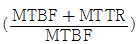
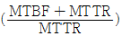
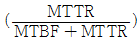
(정답률: 68%)
78. 고전압 임펄스 궤도회로에서 한쪽 궤조절연을 단락하고 다른 쪽 궤조절연간의 전압 E2와 송전전압 E1을 측정하여 극성을 알아보려할 때 동극성은?
- E1=E2
- E1≤E2
- E1＞E2
- E1＜E2
(정답률: 76%)
79. 경부고속철도 전자연동장치 구성기기 중 제어명령을 현장설비로 전송하고 현장설비의 표시정보를 연동장치로 전송하는 기능을 하는 것은?
- 조작표시반 처리모듈(PPM)
- 다중처리모듈(MPM)
- 진단모듈(DIA)
- 데이터 링크모듈(DLM)
(정답률: 67%)
80. 경부고속철도 무절연 UM71C형 궤도회로장치의 보상콘덴서 설치에 대한 설명으로 거리가 먼 것은?
- F1(2040, 2400Hz)의 경우 60[m] 간격으로 설치한다.
- F2(2760, 3120Hz)의 경우 80[m] 간격으로 설치한다.
- 분기기 첨단 끝에서 5[m] 이내에 설치한다.
- 제 위치에 설치할 수 없을 때에는 ±3[m]의 허용범위 안에서 설치할 수 있으며 그 다음 콘덴서는 제 위치에 설치한다.
(정답률: 74%)